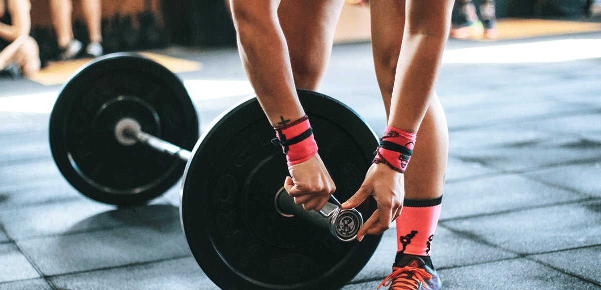
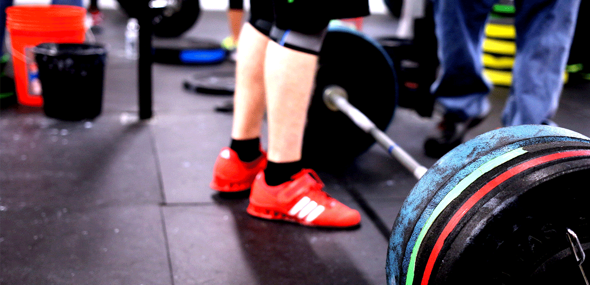

- 重点锻炼部位：胸大肌、三角肌和肱三头肌。绝大多数的冠军健美运动员把仰握推举作为锻炼上身最好的动作 开始位置：仰卧在平的卧推凳上，两脚平踏在地上两手掌向上握住横杠，两手间距比肩稍为宽些，两臂伸直支撑住杠铃位于胸的上部。 动作过程：使两直臂向两侧张开，两臂慢慢弯屈，杠铃垂直落下，直至横杠接触到胸部(大约接近乳头线上方)。然后向上推起至开设位置，重复做。训练要点：不要把背和臀部拱起或憋气，这样会使肌肉失去控制，是危险的。
- 杠铃锻炼的方法：
- 1、两头加重量，可以进行举重，可以练习臂膀的拉、提、挂、韧劲。
- 2、根据笔者的体质来进行调节两端的重量，可以担杠跑步，可以有效调节腰部、腿部、肩部的忍耐力。
- 3、双腿分开站着，上身上腿呈90度，双手举杠，能大幅度协助压腿（需要良好的腰劲，不懂动作要领，不要模仿），
- 4、杠铃放在地上，可以有效助笔者做好俯卧撑、压腿，横劈，竖劈等动作。
- 总之一句话，笔者在练习之前，只要能就地取材，练习什么动作都可利用。


- 山西盈瑞科技有限公司 备案号：晋ICP备17006549号—3
- 联系电话：17634068219 0351—7891032
- QQ：3849009147 地址：山西省太原市盛世华庭四层